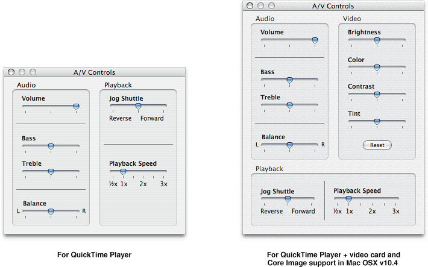
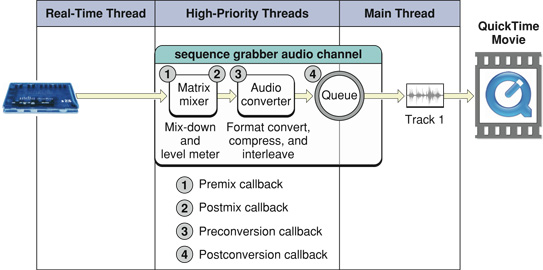

What’s New in QuickTime 7
This chapter describes in detail the many new and enhanced features available in QuickTime 7. It is intended to provide developers with a conceptual overview, in addition code samples and illustrations of usage, so that developers can take advantage of many of these new features in QuickTime 7 in their applications.
The new functions discussed in this chapter are cross-referenced, with links, to their complete descriptions in Chapter 3, “New Functions, Data Types, and Constants in QuickTime 7.”
If you are a QuickTime API-level developer, content author, multimedia producer, or Webmaster who is currently working with QuickTime, you should read this chapter in order to understand the fundamental changes that have taken place in the QuickTime software architecture.
In this section:
Installing QuickTime 7
QuickTime in Perspective
Changes to QuickTime Player and QuickTime Pro
New QuickTime Kit Framework
Audio Enhancements
Video Enhancements
Replacing NewMovieFrom... Functions
QuickTime Metadata Enhancements and API
QuickTime Sample Table API
JavaScript Support and Accessibility in Safari
Other Changes and Enhancements
Installing QuickTime 7
QuickTime 7 is installed automatically as part of Mac OS X v10.4.
Hardware and Software Requirements
QuickTime 7 requires the following minimum configuration:
Mac OS X v10.4, v10.3, or Windows
PowerPC G3 or better running at 400 MHz or higher
At least 256 MB of RAM
New Pro Key Required
QuickTime 7 replaces existing point releases of QuickTime 6 for Mac OS X. A new Pro key is required; QuickTime 6 Pro keys will not unlock the Pro features of QuickTime 7.
QuickTime in Perspective
The QuickTime API is dedicated to extending the reach of application developers by letting them invoke the full range of multimedia’s capabilities. It supports a wide range of standards-based formats, in addition to proprietary formats from Apple and others. The QuickTime API is not static, however, and has evolved over the course of the last decade to adopt new idioms, new data structures, and new ways of doing things.
The C/C++ portion of the QuickTime API comprises more than 2500 functions that provide services to applications. These services include audio and video capture and playback; movie editing, composition, and streaming; still image import, export, and display; audio-visual interactivity, and more.
A new Cocoa (Objective-C) API for QuickTime, available in Mac OS X v10.4 and v10.3, provides a much less complex programmer interface, and represents a distillation and abstraction of the most essential QuickTime functions as a small set of classes and methods. A great deal of functionality has been packed into a relatively small objective API.
New Features of QuickTime 7
This release of QuickTime includes a number of major new features for users, developers, and content creators, including improvements in the QuickTime architecture, file format, user interface, and API. There are significant improvements in the audio, video, and metadata capabilities, as well as a new Cocoa API, and numerous other enhancements.
“Changes to QuickTime Player and QuickTime Pro” describes the new user interface for QuickTime Player and QuickTime Pro and some of the changes from previous versions of the player.
“New QuickTime Kit Framework” describes a new Cocoa (Objective-C) framework for developing QuickTime applications. This new API opens the world of QuickTime programming to a new group of developers without requiring them to learn the large, complex C/C++ QuickTime API. The new framework encapsulates a tremendous amount of QuickTime functionality in a small, easily-mastered API with a handful of new objects, classes, and methods.
“Audio Enhancements” describes the many new audio features of QuickTime 7, including support for multichannel sound, playback, capture, compression, and export of high-resolution audio, a new sound description, and new functions for movie audio control, audio conversion configuration, audio extraction, movie export, and level and frequency metering.
“Video Enhancements” describes QuickTime’s new support for frame reordering video compression and the H.264 codec. Frame reordering support is a major advance that involves new sample tables for video, allowing video frames to have independent decode and display times. This allows improved display, editing, and compression of H.264 and other advanced video codecs. A new set of functions and structures are introduced to allow developers to work with samples that have independent decode and display times.
“New Abstractions Layers For OpenGL Rendering” describes the new Visual Context, an abstraction layer that eliminates dependence on graphics worlds (GWorlds) and supports rendering directly to engines such as OpenGL.
“Replacing NewMovieFrom... Functions” describes the
NewMovieFromPropertiesfunction, which allows you to set up properties before creating a movie. This function also allows you to create movies that are not necessarily associated with a graphics world, movies that can render their output to a visual context, such as an OpenGL texture buffer, and movies that play to a particular audio device.“QuickTime Metadata Enhancements and API” describes the new QuickTime extensible metadata format, allowing developers to efficiently reference text, audio, video, or other material that describes a movie, a track, or a media. Support is also added for including metadata from other file types in native format; the QuickTime 7 release includes native support for iTunes metadata.
“QuickTime Sample Table API” describes the new API for working with QT Sample Tables, a logical replacement for arrays of media sample references. The new API greatly extends the functionality of media sample references, and the new API supports frame reordering compressed media.
“JavaScript Support and Accessibility in Safari” describes the JavaScript support for the Safari browser. This means you can now use JavaScript to control QuickTime when web pages are viewed using Safari.
-
“Other Changes and Enhancements” discusses QuickTime 7’s new persistent cache option, which is important for web authors and content developers to understand because it may impact the way that QuickTime content is downloaded and saved from their websites. New updates and fixes to QuickTime for Java are also discussed in this section.
New Directions in QuickTime 7
Key areas of change evident in QuickTime 7 are:
A shift of emphasis toward a Core Audio approach to sound, and away from the Sound Manager approach, throughout QuickTime.
A shift of emphasis toward configuring components using component properties and an abstraction layer, or context, and away from the exclusive use of standard dialogs supplemented by direct access to low-level components.
A shift of emphasis toward a more object-oriented organization, with more high-level functionality in QuickTime itself supporting lighter-weight applications.
What Developers Need To Do
If you work with audio at a relatively low level, you should become familiar with the Mac OS X Core Audio framework and learn how it differs from the older Sound Manager. The use of Core Audio concepts and data structures is becoming ubiquitous in QuickTime for both Mac OS X and Windows. For details, see Apple’s Core Audio documentation.
If you work directly with components, you should become familiar with the API for discovering, getting, and setting component properties. While standard dialogs for configuration are still common, there are often times when either no dialog or an application-specific dialog is preferable, as well as cases where low-level control or device-specific configuration is needed that a standard dialog cannot supply.
For example, the component property API allows configuration at any level of detail without requiring a user interface dialog or direct communication with low-level components. In many cases, an abstraction layer, or context––either visual or audio––can be created, allowing transparent connection to different kinds of low-level components, devices, or rendering engines.
The new extensible QuickTime metadata format, discussed in the section “QuickTime Metadata Enhancements and API,” uses a similar method of configuration through an abstract set of properties, as a means of “future-proofing” the architecture. The same is true of the new API for working with QuickTime sample tables, described in the section “QuickTime Sample Table API.”
Object Model Evolution
A substantial reorganization of the QuickTime engine has been taking place “under the hood” in this software release. This reorganization is intended to allow increased access to QuickTime functionality from object-oriented frameworks such as Cocoa (Objective-C).
As the QuickTime document object model continues to evolve, the goal is to provide developers with easier access to the more powerful parts of the QuickTime engine using relatively lightweight object-oriented applications or even scripts––without having to delve into the large and sometimes complex procedural C/C++ QuickTime API. If you haven’t experimented with Cocoa and the Xcode tools yet, this is a good time to get started.
In Summary QuickTime 6 through QuickTime 7
The following table summarizes the point releases of QuickTime 6 and the features of QuickTime 7.
QuickTime version |
Mac OS X |
Windows |
Mac OS 9 |
Features |
|---|---|---|---|---|
6 |
x |
x |
x |
MPEG-4 and lots more. |
6.01 |
x |
x |
x |
Bug fix for QuickTime 6. Last version for all three platforms. |
6.03 |
x |
Bug fixes to address security issues. Mac OS 9 only. |
||
6.1 |
x |
x |
Improved MPEG-4 video, full-screen modes, wired actions. |
|
6.2 |
x |
Support for iTunes 4, enhanced AAC codec, limited DRM. |
||
6.3 |
x |
x |
Improved AAC codec, 3GPP support, which includes AMR codec. |
|
6.4 for Mac OS X |
x |
New data reference functions, multithreading, new graphics functions, component and movie property access, other API additions. |
||
6.5 |
x |
x |
3GPP, 3GPP2, and AMC support for mobile multimedia, Unicode text support. |
|
6.5.1 |
x |
x |
Apple Lossless codec for audio. |
|
7 |
x |
x |
High-resolution, multichannel audio support, frame reordering video and H.264 support, new Cocoa API, support for rendering to OpenGL and elimination of dependence on graphics worlds (GWorlds), new metadata format, QuickTime sample table API, changes to QuickTime Player and Pro UI. |
Changes to QuickTime Player and QuickTime Pro
QuickTime 7 introduces a number of new features and changes to the user interface of QuickTime Player and QuickTime Pro. These are briefly described in this section. Both Player and Pro are available in Mac OS X v10.4 and are also backward-compatible with Mac OS X v10.3.
New in QuickTime Player
The new QuickTime Player, shown in Figure 2-1, is a native Cocoa application. The intent of this new design is to better integrate QuickTime Player in general with the Mac OS X user experience.
The following are some of the new user-level features available in QuickTime Player:
H.264 video support. This state-of-the-art, standards-based codec delivers exceptional-quality video at the lowest data rate possible, across the entire bandwidth spectrum.
New audio and playback controls. Users can use the new A/V Controls window (previously available only to QuickTime Pro users) to adjust settings for the best audio and playback experience. Users can now easily change settings, including playback speed, volume, bass, treble, and balance, as shown in Figure 2-2.
Figure 2-2 New audio, playback, and video controls in QuickTime Player and QuickTime Player with Core Image support in Mac OSX v10.4
A new video controls panel is also available, as shown in the right portion of Figure 2-2. This option, however, is only available for users with a special video card on Mac OS X v10.4 where Core Image support is provided. The video controls let the user adjust for brightness, color, contrast, and tint.
Zero-configuration streaming. You no longer need to set your Internet connection speed in QuickTime Preferences. QuickTime automatically determines the best connection speed for your computer. If a connection is lost during streaming, QuickTime automatically reconnects to the server.
Live resize. Playback continues smoothly as you change the size of the QuickTime Player window. (Note that there may be hardware dependencies that affect the speed and smoothness of live resizing.)
Multichannel audio. QuickTime Player can now play 24 audio channels––and beyond. With external speakers, you can enjoy the full sound effects of movies and games.
By accessing the Window > Show Movie Properties dialog and selecting Audio Settings, as shown in Figure 2-3, you can set the volume, balance, bass, and treble for a QuickTime movie. In addition, if you select the sound track property in the dialog, you can set the speaker for each audio channel in that track, specifying the speaker through which the audio can be heard.
All-new content guide. The completely redesigned QuickTime Content Guide provides the latest in news, education, and entertainment on the Internet.
Screen-reader compatibility. Using VoiceOver, included with Mac OS X v10.4, users with visual disabilities can enjoy QuickTime Player features.
Spotlight-friendly content. New in Mac OS X v10.4, Spotlight makes it easy to find your QuickTime content. Spotlight can search for movie attributes such as artist, copyright, codec, and so on.
Easy access to QuickTime Pro. Items available only in QuickTime Pro display “Pro” by their names. If you choose one of these items, you’ll see a definition of the feature and learn how to upgrade to QuickTime Pro. Note that the designation “Pro” is only present when QuickTime Player is not the Pro version.
New in QuickTime Pro
The following are some of the new user-level features available in the Pro version of QuickTime Player:
Creating H.264 video. Users can take advantage of this codec for a variety of video needs, ranging from HD (high definition) to 3G (for mobile devices). This new codec provides better quality at lower bandwidth, enabling users to deliver high-quality video over the Internet.
Creating multichannel audio. Users can create a rich multimedia experience by labeling each audio channel (for example, Left, Right, Left Surround, LFE, and so on), as shown in Figure 2-3. QuickTime automatically mixes the audio to work with the speaker setup of each user.
Recording audio and video. With a digital video camera connected to your computer, you can enrich your email messages with video clips. In addition, with enhanced recording of audio and video, users can add narration, for example, to their slide shows.
Sharing movies. Users can easily create a movie file for sending via email or posting to your .Mac HomePage. Select File > Share and a dialog appears that lets you choose a maximum size for the attached movie you want to share and then exports the movie to either your Mail program or to your .Mac HomePage, as shown in Figure 2-4.
Full screen playback enhancements. Full screen mode now provides floating Dashboard-style controls similar to the controls available for DVD Player. These include pause, play, stop, fast forward, and rewind, as illustrated in Figure 2-5. Users move the pointer to display the controller; after a few seconds, the controller fades away. Note that the controller does not appear with interactive movies when the mouse is moved, so that it does not interfer with movie content. Users can press the keyboard control-C to make it appear or disappear immediately. This new zooming transition, enabling you to go in and out of Full Screen, is dependent on the user’s computer hardware, as well as the media being played back.
Users can access full screen mode by choosing the View > Full Screen or using its keyboard equivalent. To display the DVD-style full screen controls, users choose QuickTime Player > Preferences > Full Screen and select “Display full screen controls,” as shown in Figure 2-6.
Concurrent exports. Users can export multiple files at once—and continue with their next playback or editing task. Figure 2-7 shows the default export settings for exporting a movie to a QuickTime movie.
The export options enable Pro users to export to a variety of image, text, audio, and movie formats, as shown in Figure 2-8.
Enhanced and redesigned interface for movie settings. The Movie Properties window has been redesigned to facilitate movie authoring. Figure 2-9 illustrates the Movie Properties dialog, with annotations of the movie selected.
New options for image manipulation in the Visual Settings pane of the Movie Properties dialog of a video track, as shown in Figure 2-10.
In addition, users are provided with other options to manipulate and control image transparency in QuickTime movies and image files, shown in Figure 2-11.
Other Changes and Enhancements
QuickTime Preferences now has the option “Use high quality video setting when available.” Users can set this as the default for displaying high-quality video tracks, such as DV. Figure 2-12 shows the options available in the General pane of QuickTime Player Preferences.
Figure 2-13 shows the new File menu in QuickTime Player. The Open File command enables users to open any of a number of digital media types that QuickTime supports, including movies, still images, VR panoramas, Flash, and so on.
Choosing the File > New Movie Recording menu item enables you to record video from an external digital video camera. Recording is transparent and easy to use, as QuickTime automatically recognizes the device and opens a new QuickTime Player with a red button in the lower center, as shown in Figure 2-14. The Player also displays the current recording duration, as well as the size of the recording in megabytes.
Choosing the File > New Audio Recording menu item enables you to record audio from an external or internal audio device. Once recording begins, a new QuickTime Player appears, as shown in Figure 2-15.
To change the video or audio source for your recording, or to specify the quality of recording you want, you choose QuickTime Player > Preferences > Recording, as shown in Figure 2-16.
The Save dialog that the Save As command opens now has a “Make movie as a self-contained,” selected by default, which is a change from previous versions of QuickTime Player.
Choosing the File > Update Existing Software menu item shown in Figure 2-17 lets you update the version to the latest version of QuickTime available through Software Update.
The Edit menu has changed from previous versions of QuickTime, as shown in Figure 2-18.
Support for multiple undos is now provided. There is a command Trim to Selection (instead of Trim) and there is no longer a Replace command (users can’t do delete and paste as a single operation).
The Movie menu has been renamed and is now the View menu, as shown in Figure 2-19. The Show Movie Properties command has been moved to the Windows menu. Note that this overrides any full screen settings made in user preferences for the current presentation only.
The Present Movie command now opens a sheet as shown in Figure 2-20. The same functionality as in previous versions is provided.
The Window menu (Figure 2-21) now provides commands for getting movie properties and showing audio/video controls.
Choosing the Window > Show Movie Properties menu item and selecting Video Track 1 (shown in Figure 2-22) enables you to specify certain properties of that track. For example, if you select Annotations and want to add a field, you have multiple choices, including Album, Artist, Author, and so on.
Choosing the Window > Show Movie Properties menu item and selecting Video Track 1 (shown in Figure 2-23) with Other Settings selected enables you to specify certain properties of that track, including language, preloading of the track, caching, and so on.
The movie properties window has been reorganized, as shown in Figure 2-24. The Presentation pane provides users with four choices for presenting movie, as well as options for displaying various types of movie controllers.
New selection handles and fade in/out behavior. When the user moves the mouse over a selection of the movie, ticks appear that indicate you can make a selection over that area. When you move the mouse over the playbar, the movie will fade the selection indicators in and out. Users can also set in and out points now by placing the current time marker and typing I or O.
New QuickTime Kit Framework
QuickTime 7 introduces Cocoa developers to a new QuickTime
Kit framework (QTKit.framework).
The QuickTime Kit is a Objective-C framework with a rich API for manipulating
time-based media.
At a basic level, QuickTime Kit provides support for displaying and editing QuickTime movies, relying on abstractions and data types that are already familiar to many Cocoa programmers, such as delegation and notification. QuickTime Kit introduces new data types for QuickTime-related operations only when necessary.
Specifically, two QuickTime Kit classes––QTMovie and QTMovieView––are
intended to replace the existing Application Kit classes NSMovie and NSMovieView.
The QuickTime Kit framework is new in Mac OS X v10.4 but is also backward-compatible with Mac OS X v10.3 (Panther) as well.
The QuickTime Kit framework provides a set of Objective-C classes and methods designed for the basic manipulation of media, including movie playback, editing, import and export to standard media formats, among other capabilities. The QuickTime Kit framework is at once powerful, yet easy to include in your Cocoa application. Figure 2-25 shows the QuickTime Kit framework’s class hierarchy.
Although the QuickTime Kit framework contains only five classes, you can use these classes and their associated methods, notifications, and protocols to accomplish a broad range of tasks, such as displaying, controlling, and editing QuickTime movies in your Cocoa applications.
A QTKit palette is also provided in Interface Builder that lets you simply drag a QuickTime movie object, complete with a controller for playback, into a window, and then set attributes for the movie––all of this without writing a single line of code.
Figure 2-26 shows an animated version of what happens in Interface Builder when you drag the QuickTime object from the QTKit palette to the application window.
After you drag the QuickTime object into the application window, you have a QuickTime movie view object with a control bar in the bottom-left corner of the window, as shown in Figure 2-27. By dragging the QuickTime movie view object by its corner handle to the upper-right corner of the window, the entire window fills up so that the movie view object with its control bar is visible.
The QuickTime Kit framework is documented in the QuickTime Kit Reference in conformance with the standards established for Apple’s Cocoa documentation suite. A tutorial for using the new framework, QuickTime Kit Programming Guide, is also available online and in PDF format. You can learn how to take advantage of the new QuickTime Kit framework classes and methods and build your own QTKitPlayer application, as well as learn how to extend its functionality.
Audio Enhancements
QuickTime 7 breaks free of the limitations of the Sound Manager, adding many new features and capabilities that developers can take advantage of in their audio playback and capture applications.
Notably, QuickTime 7 now supports high-resolution audio, that is, audio sampled at sample rates higher than 64 kHz and up to 192 kHz, with up to 24 channels and support for surround sound. This is in stark contrast to the implementation of the Sound Manager, which only supported mono and stereo. High-resolution audio is supported by Apple’s Core Audio technology.
The result of these new audio enhancements is as follows:
A much richer approach to sound in QuickTime, with support for higher sampling rates, such as 96 kHz and 192 kHz, multiple channels and multiple channel layouts, including 5.1 surround sound and up to 24 discrete channels, meaning channels without any layout imposed on them. Support is also provided for a variety of more accurate audio representations, such as 24-bit uncompressed audio, during capture, playback, and export. Synchronization and access to uncompressed audio on a per-sample basis is also greatly improved, including access to raw PCM audio samples from VBR-compressed audio sources.
The introduction of a new abstraction layer: the audio context. An audio context represents a connection to a particular audio device. Using an audio context allows you to easily connect a movie to an audio device.
A more flexible architecture for capturing audio. For instance, multiple sequence grabber audio channels
SGAudioMediaType) can capture from a single device at the same time, even if the device doesn’t permit multiple clients directly, and devices with different channel layouts or different PCM audio formats can be interconnected seamlessly.Conversion of audio from one format to another on the fly, performing channel mix-down or remapping, upsampling or downsampling, and sample conversion as needed. This conversion can be performed during export, or as part of the output chain to a device with different playback characteristics than the stored audio, or as part of the capture and storage chain to map input from one or more devices into one or more storage formats.
Most components, with a few exceptions such as streaming and MPEG-4 exporting, will be able to make use of these new capabilities immediately. This release of QuickTime updates a number of components so that it is possible to capture, play back, edit, and export a broad variety of enhanced audio right away.
In brief, QuickTime 7 includes the following enhancements, discussed in this section:
A new abstraction layer for audio
A new sound description
A suite of sound description functions
New movie property to prevent pitch-shifting
New functions for gain, balance, and mute
New level and frequency metering API
New audio extraction and conversion API
New audio compression configuration component
New movie export properties to support high-resolution audio
New sequence grabber component for audio (
SGAudioMediaType)
New Abstraction Layer For Audio
QuickTime 7 introduces the audio context––a new abstraction that represents playing to an audio device.
As defined, a QuickTime audio context is an abstraction for a connection to an audio device. This allows you to work more easily and efficiently with either single or multiple audio devices in your application.
To create an audio context, you call QTAudioContextCreateForAudioDevice and
pass in the UID of the device, which is typically a CFString.
An audio context is then returned. You can then pass that audio
content either into NewMovieFromProperties,
as you would pass in a visual context, or you can open your movie
however you would normally open it and call SetMovieAudioContext.
What that does is route all the sound tracks of the movie to that particular
device.
Note that if you want to route two different movies to the
same device, you cannot use the same audio context because the audio
context is a single connection to that device. What you do is call QTAudioContextCreateForAudioDevice again
and pass in the same device UID to get another AudioContext for
the same device, and pass that to your second movie.
High-Resolution Audio Support
High-resolution audio makes use of an enhanced sound description with the ability to describe high sampling rates, multiple channels, and more accurate audio representation and reproduction.
Significantly, the new sound description has larger fields to describe the sampling rate and number of channels, so that the sound description is no longer the limiting factor for these characteristics.
The sound description has built-in support for variable-bit-rate
(VBR) audio encoding with variable-duration compressed frames. Extensions
to the sound description allow you to describe the spatial layout
of the channels, such as quadraphonic and 5.1 surround sound, or
to label channels as discrete––that is, not
tied to a particular geometry. For more information, see “SoundDescriptionV2”.
New movie audio properties include a summary channel layout property, providing a nonredundant listing of all the channel types used in the movie—such as L/R for stereo, or L/R/Ls/Rs/C for 5-channel surround sound—and a device channel layout, listing all the channel types used by the movie’s output device.
Figure 2-28 shows the layout of surround speakers. The terminology is defined in Table 1-1.
Speaker |
Definition |
|---|---|
L |
Left speaker |
R |
Right speaker |
C |
Center speaker |
Ls |
Left surround speaker |
Rs |
Right surround speaker |
LFE |
Sub-woofer (Note that LFE is an abbreviation for low-frequency effects) |
The new sound description is supported by the data types and structures used in the Core Audio framework for Mac OS X (see Core Audio documentation). While the Core Audio API itself is not available to Windows programmers, QuickTime for Windows may include the relevant data structures, such as audio buffers and stream descriptions, audio time stamps and channel layouts, and so on, described in the Core Audio documentation.
A suite of functions has been included to support the handling of sound descriptions opaquely.
Playback
Playback at the high level is automatic and transparent; if you play a movie that contains 96 kHz or 192 kHz sound, it should just work. You should not have to modify your code. The same is true for cut-and-paste editing. If the chosen output device does not support the channel layout, sampling rate, or sample size of the movie audio, mix-down and resampling are performed automatically.
Import of high-resolution audio is automatic, provided the import component has been updated to support high-resolution audio.
Export
Export of high-resolution audio is likewise transparent at
the high level. Export at the lower levels requires some additional
code. Your application must “opt in” to the new audio features
explicitly if it “talks” directly to an export component instance.
You do this by calling QTSetComponentProperty on
the exporter component instance and passing in the kQTMovieExporterPropertyID_EnableHighResolutionAudioFeatures property.
This is illustrated in the code sample Listing 2-1.
Capture
Capturing high-resolution audio requires new code to configure and use the new sequence grabber component for audio. The new audio capture API offers a number of improvements, including the ability to share an input device among multiple sequence grabber channels and the usage of multiple threads for increased efficiency.
When all components in a chain are able to work with high-resolution audio, clock information can be preserved across operations for sample-accurate synchronization.
Sound Description Creation and Accessor Functions
QuickTime 7 provides new functions that let you create, access, and convert sound descriptions.
Sound descriptions can take three basic inputs: an AudioStreamBasicDescription,
a channel layout, and magic cookie. Sound descriptions are now treated
as if they are opaque. In QuickTime 7, when you are handed a sound
description, for example, you don’t have to go in and look at
the version field.
If you want to create a sound description, you can simply
hand it an AudioStreamBasicDescription,
an optional channel layout if you have one, and an optional magic
cookie if you need one for the described audio format. Note that
it is the format (codec) of the audio that determines whether it
needs a magic cookie, not the format of the sound description.
By calling QTSoundDescriptionCreate, you can make
a sound description of any version you choose––for example,
one that is of the lowest possible version, given that it is stereo and
16-bit, or one of any particular version you want or request.
The main point about the new API is the capability provided to create a sound description and the usage of new property getters and setters. To accomplish this, follow these steps:
Get an
AudioStreamBasicDescriptionfrom a sound description.Get a channel layout from a sound description (if there is one).
Get the magic cookie from magic cookie (if there is one).
At this point, you have all the information you need to talk to Core Audio about this audio. You can also:
Get a user-readable textual description of the format described by the
SoundDescription.Add or replace a channel layout to an existing sound description. For example, this is what QuickTime Player does in the properties panel where the user can change the channel assignments.
Add a magic cookie to a sound description. (This is not needed very often unless you are writing a movie importer, for example.)
To convert an existing QuickTime sound description into the
new V2 sound description, you call QTSoundDescriptionConvert. This lets
you convert sound descriptions from one version to another.
For a description of versions 0 and 1 of the SoundDescription record,
see the documentation for the QuickTime File Format.
For a description of version 2 of the SoundDescription record,
see “SoundDescriptionV2”. For details
of the sound description functions, see QTSoundDescriptionCreate and QTSoundDescriptionConvert.
Audio Playback Enhancements
In addition to playing back high-resolution audio, QuickTime 7 introduces the following audio playback enhancements:
The ability to play movies at a nonstandard rate without pitch-shifting the audio.
Getting and setting the gain, balance, and mute values for a movie, or the gain and mute values for a track.
Providing audio level and frequency metering during playback.
Preventing Pitch-Shifting
A new property is available for use with the NewMovieFromProperties function: kQTAudioPropertyID_RateChangesPreservePitch.
When this property is set, changing the movie playback rate will
not result in pitch-shifting of the audio. This allows you to fast-forward
through a movie without hearing chipmunks.
Setting this property also affects playback of scaled edits, making it possible to change the tempo of a sound segment or scale it to line up with a video segment, for example, without changing the pitch of the sound.
Gain, Mute, and Balance
New functions are available to set the left-right balance for a movie, set the gain for a movie or track, or to mute and unmute a movie or track without changing the gain or balance settings.
The gain and mute functions duplicate existing functions for setting track and movie volume, but the new functions present a simpler and more consistant programmer interface.
For example, to mute the movie using the old SetMovieVolume function,
you would pass in a negative volume value; to preserve the current
volume over a mute and unmute operation, you had to first read the
volume, then negate it and set it for muting, then negate it and
set it again to unmute. By comparison, the new SetMovieAudioMute function
simply mutes or unmutes the movie without changing the gain value.
Note: The values set using these functions are not persistent; that is, they are not saved with the movie.
For details, see
Level and Frequency Metering
It is now easy to obtain real-time measurements of the average audio output power level in one or more frequency bands.
You can specify the number of frequency bands to meter. QuickTime divides the possible frequency spectrum (approximately half the audio sampling rate) into that many bands. You can ask QuickTime for the center frequency of each resulting band for display in your user interface.
You can measure the levels either before or after any mix-down or remapping to an output device. For example, if you are playing four-channel surround sound into a stereo output device, you might want to meter the audio levels of all four channels, or you might prefer to see the actual output values delivered to the stereo device.
To use the frequency metering API, follow these steps:
Set the number of frequency bands to meter using
SetMovieAudioFrequencyMeteringNumBands.Call
GetMovieAudioFrequencyMeteringBandFrequenciesif you need to know the frequencies of the resulting bands.Finally, make periodic calls to
GetMovieAudioFrequencyLevelsto obtain measurements in all specified bands. You can obtain either the average values, the peak hold values, or both.
For details, see
Audio Conversion, Export, and Extraction
The new audio extraction API lets you retrieve mixed, uncompressed audio from a movie.
Note that the audio extraction API currently only mixes audio from sound tracks. Other media types, such as muxed MPEG-1 audio inside a program stream, are not currently supported.
To use the audio extraction API, follow these steps:
Begin by calling
MovieAudioExtractionBegin. This returns an opaque session object that you pass to subsequent extraction routines.You can then get the
AudioStreamBasicDescriptionfor the audio or layout. Note that some properties are of variable size, such as the channel layout, depending on the audio format, so getting the information involves a two-step process.First, you call
MovieAudioExtractionGetPropertyInfoto find out how much space to allocate.Next, call
MovieAudioExtractionGetPropertyto obtain the actual value of the property.
You can use the
AudioStreamBasicDescriptionto specify a different uncompressed format than Float 32. This causes the extraction API to automatically convert from the stored audio format into your specified format.Use the
MovieAudioExtractionSetPropertyfunction to specify channel remapping––that is, a different layout––sample rate conversion, and preferred sample size. You can also use this function to specify interleaved samples (default is non-interleaved) or to set the movie time to an arbitrary point.
Note that there are basically two things you set here: an audio stream basic description (ASBD) and a channel layout. (ASBD sets the format, sample, number of channels, interleavings, and so on.)
Setup is now complete. You can now make a series of calls
to MovieAudioExtractionFillBuffer to
receive uncompressed PCM audio in your chosen format.
The default is for the first call to begin extracting audio at the start of the movie, and for subsequent calls to begin where the last call left off, but you can set the extraction point anywhere in the movie timeline by calling
MovieAudioExtractionSetPropertyand setting the movie time.MovieAudioExtractionFillBufferwill setkMovieAudioExtractionCompletein outFlags when you reach the end of the movie audio.You must call
MovieAudioExtractionEndwhen you are done. This deallocates internal buffers and data structures that would otherwise continue to use memory and resources.
A caveat: Ideally, the uncompressed samples would be bitwise identical whether you obtained the samples by starting at the beginning of the movie and iterating through it, or by randomly setting the movie time and extracting audio samples. This is typically the case, but for some compression schemes the output of the decompressor depends not only on the compressed sample, but the seed value in the decompressor that remains after previous operations.
The current release of QuickTime does not perform the necessary work to determine what the seed value would be when the movie time is changed prior to extracting audio; while the extracted audio is generally indistinguishable by ear, it may not always be bitwise identical.
For details about audio conversion, export, and extraction, refer to the information about the following functions:
Standard Audio Compression Enhancements
QuickTime 7 introduces a new standard compressor component, StandardCompressionSubTypeAudio,
that adds the ability to configure high-resolution audio output
formats. It uses Core Audio internally instead of the Sound Manager,
and has a full set of component properties to make configuration
easier, especially when the developer wishes to bring up an application-specific
dialog, or no dialog, rather than the typical compression dialog.
This component essentially replaces the StandardCompressionSubTypeSound component, which
is limited to 1 or 2 channel sound with sampling rates of 65 kHz
or less. That component is retained for backward compatability with
existing code, but its use is no longer recommended.
The StandardCompressionSubTypeAudio component
is configured by getting and setting component properties, instead
of using GetInfo and SetInfo calls. These properties have a class
and ID, instead of just a single selector.
The component property API allows configuration at any level of detail without requiring a user interface dialog or direct communication with low-level components.
For details, refer to the sections “SGAudio Component Property Classes”and “SGAudio Component Property IDs.”
Note: You can also
configure the new standard audio compression component by calling SCSetSettingsFromAtomContainer.
You can pass the new standard audio compression component either
a new atom container obtained from SCGetSettingsAsAtomContainer or
an old atom container returned by calling the same function (SCGetSettingsAsAtomContainer) on
the old SubTypeSound component.
If you use MovieExportToDataRefFromProcedures,
your getProperty proc will need to support some of these property
IDs as new selectors. Note that the Movie Exporter getProperty proc
API is not changing to add a class (the class is implied).
Note: Not all properties
can be implemented by getProperty procs; the properties that getProperty
procs can implement are marked with the word "DataProc".
See the inline documentation in QuickTimeComponents.h for
more information.
Audio Export Enhancements
Some movie export components now support high-resolution audio.
Export of high-resolution audio is transparent at the high level. If you export from a movie containing high-resolution audio to a format whose export component supports it, the transfer of data is automatic; if the export component does not support high-resolution audio, mix-down, resampling, and sound description conversion are automatic.
Export at the lower levels requires some additional code. Your application must “opt in” to the new audio features explicitly if it talks directly to an export component instance. (This is to prevent applications that have inadvisedly chosen to “walk” the opaque atom settings structure from crashing when they encounter the new and radically different structure.) The following code snippet (Listing 2-1) illustrates the opt-in process.
Listing 2-1 Opting in for high-resolution audio export
ComponentInstance exporterCI; |
ComponentDescription search = { ’spit’, ’MooV’, ’appl’, 0, 0 }; |
Boolean useHighResolutionAudio = true, canceled; |
OSStatus err = noErr; |
Component c = FindNextComponent(NULL, &search); |
exporterCI = OpenComponent(c); |
// Hey exporter, I understand high-resolution audio!! |
(void) QTSetComponentProperty(// disregard error |
exporterCI, |
kQTPropertyClass_MovieExporter, |
kQTMovieExporterPropertyID_EnableHighResolutionAudioFeatures, |
sizeof(Boolean), |
&useHighResolutionAudio); |
err = MovieExportDoUserDialog(exporterCI, myMovie, NULL, 0, 0, &canceled); |
For additional details, see “Movie Exporter Properties”.
Audio Capture Enhancements
There is a new sequence grabber channel component (’sgch’)
subtype for audio, SGAudioMediaType (’audi’),
which allows capture of high-resolution audio, supporting multi-channel,
high sample rate, high accuracy sound. This is intended to replace
the older SoundMediaType component.
Important:
The new component still captures a sound track of type SoundMediaType (’soun’);
only the sequence grabber media type changes,
not the final track media type.
The new audio channel component has a number of noteworthy features, including:
audio capture to VBR compressed formats
enabling or disabling of source channels on a multi-channel input device
mix-down and remapping of multi-channel audio source material
discrete and spatial labeling of channels (for example, 5.1 or discrete)
audio format and sample rate conversion during capture
sharing of audio input devices among multiple sequence grabber audio channels
sharing of audio playback devices among multiple sequence grabber audio channels
notification of audio device hotplug/unplug events
audio preview of source data or compressed data
splitting audio channels from a record device to separate tracks in a movie
redundant capture of multichannel audio to separate tracks in a movie (with independent data rates and compression settings)
client callbacks of audio pre- and post-mixdown, and pre- and post-conversion with propagation of audio time stamps and audio samples to interested clients
improved A/V sync
improved threading model compared with the legacy
SoundMediaTypelower latency audio grabs
reduced dependency on frequent
SGIdlecalls
This new, advanced functionality makes extensive use of Core Audio methodology and data structures.
Configuring Audio Channel Components
The audio channel component can be configured using component properties. This has several advantages over using a sequence grabber panel. For one thing, it can be configured without a user dialog, or using an application-specific dialog. For another, it is possible to test for properties and get or set them dynamically, allowing the same code to configure multiple audio input devices, including unfamiliar devices.
The application does not need to bypass the channel component
and connect directly to an input device, such as a SoundInputDriver,
to set low-level properties. This allows multiple capture channels
to share a single input device, and keeps application code from
becoming tied to a particular device type.
For a full list of the SGAudioMediaType component
properties, see “SGAudio Component Property IDs”.
For a full list of component property classes, see “SGAudio Component Property Classes”.
Once the component is configured, the audio capture—plus any desired mixdown, format or sample-rate conversion, and compression—take place in a combination of real-time and high-priority threads. Multichannel data is interleaved and samples are put into a queue. You can set up callbacks to watch the data at any of several points in the chain: pre-mixdown, post-mixdown, pre-conversion, or post-conversion.
The actual writing of the captured audio to a storage medium,
such as a disk file, takes place during calls to SGIdle.
One input device can be shared by multiple sequence grabber channels, as illustrated in Figure 2-29. Because independent mix and conversion stages exist for each sequence grabber audio channel, the sequence grabber audio channels can capture different channel mixes, sampling rates, sample sizes, or compression schemes from the same source. Similarly, multiple sequence grabber audio channels can share a common output device for previewing.
Channel mixdown or remapping, sample conversion, and any compression are all performed on high-priority threads. Each sequence grabber channel receives data from only those audio channels it has requested, in the format it has specified. The following processing may occur in the background:
software gain adjustment
mixing
sample rate conversion
bit-depth widening or shortening
float to integer conversion
byte-order conversion (big-endian to little-endian or vice-versa)
encoding of frames into compressed packets of data in the specified format
interleaving
The resulting frames or packets are held in a queue, to be
written to file or broadcast stream on the main thread. This is
accomplished during calls to SGIdle,
at which time the audio is chunked and interleaved with any video
data being captured.
Sequence Grabber Audio Channel Mapping
Figure 2-29 is a high-level diagram that shows some of the internal workings of the sequence grabber audio channel, such as the Core Audio matrix mixer and the audio converter that lets you convert, compress, and interleave audio, and then queue the audio. From the queue, the audio can be written to disk in desired chunk sizes. One distinct advantage of this process is that you can take a single device and share it among multiple channels. This results in simultaneous recording from multiple devices into multiple tracks in a QuickTime movie. In addition, you can record multiple tracks from a single device.
Figure 2-30 illustrates a usage case that involves client channel mapping. This shows how a client can instantiate multiple sequence grabber audio channels that share a recording device. This enables the “splitting” of device channels across multiple tracks in a QuickTime movie. In Figure 2-30, there is single recording device, with four channels. The first two channels record into Track 1 in a QuickTime movie. The second sequence grabber audio channel, which records into Track 2 in a QuickTime movie, only wants channel 4 from the recording device, so that you can get one stereo track and one mono track.
In this example, device Track 0 will get into Movie Track 1, while Movie Track 3 has only one slot to fill. You can mix and match different channel map valences in such a way as to disable certain tracks in a movie and get submixes, for example. In code, it looks like this:
SInt32 map 1 [ ] = { 0, 1 }; |
SInt32 map 2 [ ] = { 3 }; |
Figure 2-31 shows another usage case that also involves client channel mapping.
A sequence grabber audio channel shown in the illustration can get four channels from a device in any order that makes sense for the client. Consider, for instance, a device that supports four-channels of audio. Using the channel map property IDs (“SGAudio Component Property IDs”), you can reorder channels from a recording device to a desired movie channel valence. In code, it looks like this:
SInt32 map [ 4 ] = { 3, 2, 1, 0 }; |
Figure 2-32 shows another example of what you can do with the feature of channel mapping, in this case mult’-ing, that is, duplicating channels from a recording device into multiple output channels in QuickTime movie tracks. For instance, you can take advantage of this channel mapping feature if you have one recording device and two sequence grabber audio channels, and they’re both going to make the same movie. The first sequence grabber audio channel wants the first stereo pair twice (1, 2, 1, 2), while the second wants the second stereo pair twice (3, 4, 3, 4). In code, it looks like this (zero-based indexing):
SInt32 map 1 [ ] = { 0, 1, 0, 1 }; |
SInt32 map 2 [ ] = { 2, 3, 2, 3 }; |
Figure 2-33 illustrates the what you can do with multiple mixes. Because you can duplicate device channels onto multiple output tracks, you can create a movie containing multiple mixes of the same source material.
This is useful for a recording situation where you have a six channel recording device and are presenting 5.1 material. You could make a QuickTime movie that has four tracks in it. In this case, the first track is getting the raw, unmixed source––that is, channels one through six. You will have a six discrete channel track, meaning that the first channel plays out to the first speaker, the second channel out to the second speaker, and so on.
In sequence grabber audio channel #2, you’ll get a 5.1 mix and apply spatial orientation to the six channels, specifying the speakers to which the audio will play. All four tracks are going into a QuickTime movie. Sequence grabber audio channel #3 presents a stereo mix-down, while sequence grabber audio channel #4 presents a mono mix-down.
Figure 2-34 shows channel mapping with multi-date rates, similar to multiple mixes, except that you can also apply compression to the mixes. As a result, you can broadcast multiple streams at once.
Figure 2-35 shows sequence grabber audio callbacks,
which are analogous to the VideoMediaType sequence
grabber channel video bottlenecks. The callbacks provide developers
with different places in the audio chain where they can “pipe
in” and look at the samples.
Figure 2-35 Sequence grabber audio callbacks, analogous to sequence grabber video bottlenecks callbacks
Figure 2-36 shows sequence grabber audio callbacks, with real-time preview. Clients can specify what they want to preview, using the sequence grabber channel play flags.
Using Sequence Grabber Audio Features
To make use of the new sequence grabber audio features, follow these steps:
Instantiate a sequence grabber channel of subtype
SGAudioMediaType(’audi’), by callingSGNewChannel(sg, SGAudioMediaType, &audiChannel).Use the QuickTime component property API to obtain a list of available input and preview devices from the sequence grabber channel, by getting the property
kQTSGPropertyID_DeviceListWithAttributes(’#dva’).Use the same component property API to get the input device characteristics and set the desired audio format and device settings. See
“SGAudio Component Property Classes”and“SGAudio Component Property IDs”for details. Note that this is sometimes a two-stage process, as next described.Use
QTGetComponentPropertyInfoto determine the size of the property value.Allocate the necessary container and use
QTGetComponentPropertyto obtain the actual value. This is necessary with properties such as channel layout, which is a variable length structure.
Call
SGStartRecordorSGStartPreview, enabling the sequence grabber, and then make periodic calls toSGIdle.
If you are capturing only sequence grabber audio media, it
is no longer necessary to make extremely frequent calls to SGIdle,
since this function is only used to write the samples to storage,
not to capture data from the input device. When capturing video
or using an old-style sequence grabber sound media component, however,
you must still call SGIdle frequently
(at a frequency greater than the video sample rate or the sound
chunk rate).
By setting the appropriate sequence grabber channel properties
and setting up a callback, you can examine samples at various points
in the input chain, such as premix, postmix, preconversion, and
postconversion. For details, see SGAudioCallbackProc, SGAudioCallbackStruct, “SGAudio Component Property Classes” and “SGAudio Component Property IDs”.
Video Enhancements
QuickTime 7 introduces a number of important video enhancements, discussed in this section. These include
Support for compressed video using frame reordering. Support is added for compression, playback, streaming, and low-level access to stored samples.
A new visual context that provides an abstraction layer that is intended to decouple QuickTime from graphics worlds (GWorlds). This decoupling allows programmers to work in QuickTime without needing to understand QuickDraw, and to more easily render QuickTime directly using engines such as OpenGL.
Support for H.264 video compression, including QuickTime components for export, playback, and live streaming.
Frame Reordering Video
QuickTime 7 adds support for frame reordering video compression. This is a major advance that involves new sample tables for video to allow video frames to have independent decode and display times.
The result of using frame reordering for video compression is improved display, editing, and capture in H.264 and other advanced video codec formats. Enhancements include a new API for working with media sample times, adding and finding samples, and a new Image Compression Manager (ICM) API.
Understanding Frame Reordering Video Compression
QuickTime supports many types of video compression, including spatial compression algorithms, such as photo-JPEG, and temporal compression algorithms, in which some video frames are described completely, while other frames are described in terms of their differences from other video frames.
Up until the introduction of H.264 in QuickTime 7, video frames could be of three kinds:
I-frames (independently decodable)
P-frames (predicted from a previous I- or P-frame)
B-frames (predicted from one past and one future I- or P-frame)
Note: B-frame, I-frame, and P-frame are all video compression methods used by the MPEG standard. B-frame is an abbreviation for bi-directional frame, or bi-directional predictive frame. B-frames rely on the frames preceding and following them and only contain data that has changed from the preceding frame or is different from data in the next frame.
P-frame is an abbreviation for predictive frame, or predicted frame. P-frames follow I-frames and contain only the data that has changed from the preceding I-frame. P-frames rely on I-frames to fill in most of its data.I-frame, also known as keyframes, is an abbreviation for intraframe. An I-frame stores all the data required to display the frame. In common usage, I-frames are interspersed with P-frames and B-frames in a compressed video.Because B-frames predict from a future frame, that frame has to be decoded before the B-frame, yet displayed after it; this is why frame reordering is needed.The decoded order is no longer the same as the displayed order.The QuickTime support for frame reordering is quite general.In the H.264 codec, the concepts of the direction of prediction, and the numbers of referenced frames, and the kind of frame that is referenced, are all decoupled. In H.264, an encoder may choose to make a stream in which P-frames refer to a future frame, or a B-frame which refers to two past or future frames, for example.
Important: Prior to this release, QuickTime supported self-contained video frames (keyframes, also called sync-frames or I-frames) and frames that depended on previous frames (P-frames). Many modern compressors also make use of frame reordering, in which frames can depend on future frames.Those future frames have to be decoded before the frame in question, but displayed after it––hence the reordering. Traditional B-frames are one example: they depend on a past and a future I- or P-frame.That future I- or P-frame has to be given to the decoder before the B-frame, but is displayed after the B-frame itself. This means that the frames are stored or streamed in decode order, rather than in display order.
For decompressors that don’t use frame reorderings, the decode order and the display order are the same, and QuickTime sample tables are traditionally organized to reflect this. Samples are stored in decode order, which is presumed to be the display order, and the sample tables specify the duration of each sample’s display; the display time is the time when the track begins plus the duration of all previous samples.
The addition of frame reordering support means that QuickTime now has an optional sample table for video that specifies the offset between the decode time and the display time. This allows frames to be stored in decode order but displayed in a different order. The decode time is still the beginning of the track plus the decode duration of all previous samples, but it is now necessary to examine the offset table to determine which samples precede others and calculate the correct display time.
For high-level programmers, this all happens transparently. Developers who work directly with sample numbers and sample times, however, must be aware of this new feature. A new, expanded API is available to support this.
Finding and Adding Samples
Developers who need to work with specific samples based on the samples’ display times, or who are adding samples to a media directly, need to use a different API when working with media that uses frame reorderings.
For example, programmers who use the function MediaTimeToSampleNum must
instead use the two functions MediaDecodeTimeToSampleNum and MediaDisplayTimeToSampleNum when working
with frame reordering compressed video, as each sample now has a
decode time and a display time instead of a single media time (combined
decode/display time).
Similarly, when adding samples to a media that permits display
offsets, it is necessary to use the new AddMediaSample2 instead
of AddMediaSample, as the new function
permits the user to pass a display offset and specify properties
that are unique to media with display offsets, such as whether subsequent
samples are allowed to have earlier display times than the current
sample.
Calling one of the old functions that use a single media time
value on new-format media that contains display offsets will return
the error code kQTErrMediaHasDisplayOffsets.
The new API elements all use 64-bit time values, whereas the
older API elements use 32-bit values. Calling one of the old functions
with a 64-bit time value returns the error code kQTErrTimeValueTooBig.
When creating a media for frame reordering compressed video
track, pass in the new flag kCharacteristicSupportsDisplayOffsets.
For details, see:
There is additional support for programmers who work directly with arrays of media sample references. Although these new functions work with frame reordering video or other media with independent decode and display times, they can also be used with ordinary media types. See “QuickTime Sample Table API.”
Compressing Video Using Frame Reordering
When compressing video that uses frame reordering, there is no longer a one-to-one correspondence between submitting a frame for compression and getting back a compressed sample. The Image Compression Manager (ICM) and the compressor component may buffer multiple images before determining that a series of frames should be B-frames and a subsequent image should be decompressed out of order so that the B-frames can refer to it. The new ICM functions do not require a strict correlation between input frames and output frames. Frames may be rearranged by compression and decompression modules.
The new functions allow groups of multiple pixel buffers to
be in use at various processing points in order to avoid unnecessary
copying of data, using CVPixelBuffers and CVPixelBufferPools.
These new types are Core Foundation based. They follow Core Foundation’s
protocols for reference counting (create/copy/retain/release). Each
type has its own retain and release functions which are type-safe
and NULL-safe, but otherwise equivalent to CFRetain and CFRelease.
Note that the CVPixelBuffer functions generally provide their output
data through callbacks, rather than as return values or function parameters.
In general, the new functions return OSStatus,
with the exception of some simple Get functions that return single
values.
Clients create compression sessions using ICMCompressionSessionCreate. They then
feed pixel buffers in display order to ICMCompressionSessionEncodeFrame. Encoded
frames may not be output immediately, and may not be returned in
the same order as they are input—encoded frames will be returned
in decode order, which will sometimes differ from display order.
One of the parameters to ICMCompressionSessionCreate specifies
a callback routine that QuickTime will call when each encoded frame
is ready. Frames should be stored in the order they are output (decode
order).
To force frames up to a certain display time to be encoded
and output, call ICMCompressionSessionCompleteFrames.
To obtain a pixel buffer pool that satisfies the requirements
of both your pixel buffer producer and the compressor, pass the
pixel buffer producer’s pixel buffer options into ICMCompressionSessionCreate,
and then call ICMCompressionSessionGetPixelBufferPool. The
compression session constructs an appropriate pixel buffer pool.
Alternatively, you can create your own pixel buffer pool by obtaining the compressor’s pixel buffer attributes, choosing a format compatible with your pixel buffer producer, and setting that compressor’s input format using the component properties API. The process of obtaining the pixel buffer attributes is illustrated in the following code snippet.
CFDictionaryRef attributesDictionary = NULL; |
err = ICMCompressionSessionGetProperty( |
session, |
kQTPropertyClass_ICMCompressionSession, |
kICMCompressionSessionPropertyID_CompressorPixelBufferAttributes, |
sizeof(CFDictionaryRef), |
&attributesDictionary, |
NULL); |
if (attributesDictionary) { |
// ...use... |
CFRelease(attributesDictionary); |
} |
You can also pass arbitrary pixel buffers to ICMCompressionSessionEncodeFrame;
if they’re incompatible with the compressor’s requirements,
then the compression session will make compatible copies and pass
those to the compressor. This requires less setup but can result in
significantly slower operation.
When the compressor no longer needs a source pixel buffer,
it will release it. You may also pass ICMCompressionSessionEncodeFrame a
callback to be called when the source pixel buffer is released.
Clients may call ICMCompressionSessionGetImageDescription to
get the image description for the encoded frames. Where possible,
the ICM will allow this to be called before the first frame is encoded.
For additional details, see:
H.264 Codec
The H.264 codec is the latest standards-based video codec. Published jointly by the ITU as H.264––Advanced Video Coding, and by ISO as MPEG-4 Part 10––Advanced Video Coding, the H.264 codec promises better image quality at lower bit rates than the current MPEG-4 video codec, and also better live streaming characteristics than the current H.263 codec.
This represents a significant increase in quality and performance, while operating in a standards-based framework.
QuickTime 7 for Mac OS X v10.4 includes a QuickTime decompressor component and an exporter component for creating and playing H.264-encoded video in QuickTime.
The H.264 codec makes use of QuickTime 7’s new support for frame reordering video compression.
New Abstractions Layers For OpenGL Rendering
QuickTime 7 introduces the visual context—an abstraction that represents a visual output destination for a movie—and the OpenGL texture context, an implementation of the visual context that renders a movie’s output as a series of OpenGL textures.
QuickTime Visual Context
A QuickTime visual context provides an abstraction layer that decouples QuickTime movies from GWorlds. This allows you to work in QuickTime without have to rely on QuickDraw concepts and structures. A visual context enables you to render QuickTime output using engines such as OpenGL.
A visual context can act as a virtual output device, rendering the movie’s visual output, streaming it, storing it, or processing it in any number of ways.
A visual context can also act as a bridge between a QuickTime movie and an application’s visual rendering environment. For example, you can set up a visual context for OpenGL textures. This causes a movie to produce its visual output as a series of OpenGL textures. You can then pass the textures to OpenGL for rendering, without having to copy the contents of a GWorld and transform it into an OpenGL texture yourself. In this case, the visual context performs the transformation from pixel buffers to OpenGL textures and delivers the visual output to your application.
A QTVisualContextRef is
an opaque token that represents a drawing destination for a movie.
The visual context is, in object-oriented terms, a base class for
other concrete implementations of visual rendering environments.
The output of the visual context depends entirely on the implementation.
The implementation supplied with QuickTime 7 produces a series of
OpenGL textures, but the list of possible outputs is extensible.
You create a visual context by calling a function that instantiates
a context of a particular type, such as QTOpenGLTextureContextCreate.
This allocates a context object suitable for passing to functions
such as SetMovieVisualContext or NewMovieFromProperties, which target
the visual output of the movie to the specified context.
Important:
To use a visual context, open or create your movie
using the NewMovieFromProperties function.
In order to use a visual context with a QuickTime movie, you
should instantiate the movie using the new NewMovieFromProperties function. This
creates a movie that can accept a visual context. You can either
specify the desired visual context when you instantiate the movie,
or set the initial visual context to NIL (to
prevent the movie from inheriting the current GWorld), and set the
visual context later using SetMovieVisualContext.
See “Replacing NewMovieFrom... Functions” for details.
It is also possible to set a visual context for a movie that
was instantiated using an older function, such as NewMovieFromFile.
Such a movie will be associated with a GWorld. You change this to
a visual context by first calling SetMovieVisualContext on
the movie with the visual context set to NIL.
This disassociates the movie from its GWorld (or any previous visual
context). You can then call SetMovieVisualContext a
second time, this time passing in a QTVisualContextRef.
OpenGL Texture Context
QuickTime 7 includes an OpenGL texture context.
A QTOpenGLTextureContext is
a specific implementation of the visual context that provides the
movie’s visual data to a client application as OpenGL textures.
These textures can then be rendered to the screen using OpenGL,
composited with other graphics, run through CoreImage filters, or
whatever else you, as the application developer, choose to do.
To use a QTOpenGLTextureContext for
rendering to OpenGL, you must first set up an OpenGL session using
your own code (Carbon, Cocoa, or CGL, for example).
Warning: Call QuickTime OpenGL texture context functions only when you are certain that no other thread is making calls to the same OpenGL context that the QuickTime texture context is using.
Follow these steps:
Create an OpenGL texture context by calling
QTOpenGLTextureContextCreate, passing in the desiredCGLContextandCGLPixelFormat.Use the
QTVisualContextRefthat you get back to refer to your new visual context in other functions.
Note: Mac OS X v10.4
exposes a new function in Carbon’s OpenGL API (AGL) to get a CGLPixelFormat from
an AGLPixelFormat.
You can use the function
QTVisualContextSetImageAvailableCallbackto pass in an optional callback function if you want to be notified when the context has a new texture ready. A visual context callback of this type notifies you that a texture is available, but it may not actually be created until you ask for it. It is even possible for a texture to become invalid and be flushed after the callback and before the retrieval. Consequently, you should always poll for a new texture by callingQTVisualContextIsNewImageAvailablein your render loop.The two functions that check for availability,
QTVisualContextNewImageAvailableand the callback function, are the only QuickTime OpenGL texture context functions that are completely thread safe. All the other texture context functions must be called from a point in your application when it can be guaranteed that no other thread will make OpenGL calls to the same OpenGL context used by the texture context.Set the
QTVisualContextas the visual output of a movie by callingNewMovieFromPropertiesorSetMovieVisualContext. Note thatSetMovieVisualContextwill fail if the movie was not opened usingNewMovieFromProperties. Additionally, this call may fail if the host hardware is incapable of supporting the visual context for any reason. For example, many current graphics cards have a size limit of 2048 pixels in any dimension for OpenGL textures, so the attempt to set the visual context to OpenGL textures would fail with a larger movie. (One work-around for this problem is to resize the movie to fit within the hardware limitations given byglGetIntegerv(GL_MAX_TEXTURE_SIZE, &maxTextureSize)).Poll for the availability of new textures by calling
QTVisualContextNewImageAvailableduring your render loop. Be aware that this function, or the optional callback, may be notifying you of a texture’s availability well ahead of its display time, while previous undisplayed textures remain enqueued.Your application can get a texture when you are ready to work with it by calling
QTVisualContextCopyImageForTime. You may then pass the texture to OpenGL for display. Be aware, however, that calls to this function may produce a null texture at times when there is no visual output at the specified point in the movie timeline.
Important: You cannot call for textures out of order. Once you ask for a copy of the texture for a given time, that texture and any textures for previous times are no longer available.
You should make periodic calls to
QTVisualContextTaskduring your program to allocate time for the OpenGL visual context to do its work.Again, it is critical that this OpenGL texture function be called only at a point in your application when it can be guaranteed that no other thread will make OpenGL calls to the same OpenGL context used by the QuickTime visual context.
When you are done with the visual context, release it by calling
QTVisualContextRelease. You can nest calls that retain and release the context as needed. These calls increment and decrement the context’s reference count. When the count reachs zero, the context is deallocated and disposed. If your application creates theQTOpenGLContext, it is responsible for releasing it.
For additional details, see:
QTVisualContextRef
Limitation Working With QuartzExtreme
Developers working on non-QuartzExtreme computers should be aware of a specific limitation with QTVisualContext. The limitation is that with QuartzExtreme turned off, the creation of a QTVisualContext fails with error -108.
If you launch QuartzDebug and turn off QuartzExtreme, and
then launch the LiveVideoMixer and import a movie into a channel,
it won’t play. In the console, the following error message is
returned: QTVisualContext creation failed with
error:-108.
Replacing NewMovieFrom... Functions
QuickTime 7 introduces a replacement––NewMovieFromProperties–– for NewMovie, NewMovieFromDataRef,
and all other NewMovieFrom... functions.
In previous versions of QuickTime, you could use other functions
that create new movies, including NewMovieFromFile and NewMovieFromDataRef.
These functions accept flags that allow you to set some movie characteristics
at creation time, but other movie characteristics are always set
by default. For example, there must be a valid graphics port associated
with a movie created by these functions, even if the movie does
not output video.
NewMovieFromProperties allows you to
configure an extensible set of properties before creating a movie.
This has a number of advantages.
You can open a movie with exactly the properties you want, preventing QuickTime from taking undesired default actions.
You can also specify properties that the older functions do not know about, such as a visual context for the movie.
Using NewMovieFromProperties
To instantiate a movie using NewMovieFromProperties,
follow these steps:
Pass in a CFString file path, a URL, or set up a data reference, just as you would for
NewMovieFromDataRefor one of the otherNewMovieFrom_functions.Next, set up a visual context for the movie to use by calling a function that creates a context of a the desired type, such as
QTOpenGLTextureContextCreate. Similarly, you can set up an audio context if you want a device other than the default device.Call
NewMovieFromProperties, passing in the data reference for the movie and theQTVisualContextReffor the visual context, plus any appropriate properties listed in theQTNewMoviePropertyArray.
Properties are passed in using a QTNewMoviePropertyElement struct,
which specifies the property class and property ID of each property.
The movie will automatically retain the visual context, so if your application does not need to work with the context directly, you may release it now.
For additional details, see:
QTNewMoviePropertyArray
QuickTime Metadata Enhancements and API
QuickTime 7 introduces a new extensible metadata storage format that allows more flexible and efficient storage of metadata, including encapsulated storage of metadata in native format (without translating to and from a defined QuickTime format). For developers, this means that you can now write cleaner, more generic code that enables you to look at, for example, all the metadata in a QuickTime or iTunes music track using just a single function call.
Metadata, of course, is information about a file, track, or
media, such as the white balance used to create a photographic image
or the artist, album, and title of an MP3 track. Traditionally,
metadata information is stored in QuickTime user data items or in
ancilliary tracks in a movie. For example, copyright information
is normally stored in a ’@cpy’ user data
item, while cover art for an AAC audio track is normally stored
in a track that is not displayed by all applications.
The new metadata enhancements in QuickTime 7 allow you to access both old (QuickTime) and new (iTunes) formats. The new metadata storage format is intended as a replacement for QuickTime user data, which was limited in features and robustness. Specifically, the metadata enhancements introduced in QuickTime 7 provide the following capabilities:
The ability to assign data types to any metadata that you place into the new storage format.
The ability to assign locale information––for example, a particular language or country––to the format.
The ability to use a more descriptive key in the storage format––for example, a reverse DNS format, such as com.apple.quicktime.mov.
The new metadata format allows storage of data that is not possible in user data items, without extending the list of item types exhaustively, and allows labeling of metadata unambiguously, rather than as data in an undisplayed media track. It also permits inclusion of metadata that is always stored external to the movie, even when the movie is flattened (saved as self-contained).
How It Works
Metadata is encapsulated in an opaque container and accessed
using a QTMetDataRef.
A QTMetaDataRef represents a metadata
repository consisting of one or more native metadata containers.
The QuickTime metadata API supports unified access to and management
of these containers.
Each container consists of some number of metadata items. Metadata items correspond to individually labeled values with characteristics such as keys, data types, locale information, and so on. Note that what QuickTime calls items are sometimes referred to as attributes or properties in other metadata systems.
You address each container by its storage format (kQTMetaDataStorageFormat).
Initially, there is support for classic QuickTime user data items,
iTunes metadata, and a richer QuickTime metadata container format.
A QTMetaDataRef may have one or all
of these. No direct access to the native storage containers is provided.
QTMetaDataRefs may be associated
with a movie, track or media. This parallels user data atoms usage
but provides access to other kinds of metadata storage at those
levels.
A metadata item is assigned a runtime identifier (QTMetaDataItem)
that along with the QTMetaDataRef identifies
the particular item (and value) across all native containers managed
by the QTMetaDataRef.
Each item is addressed by a key, or label. The key is not necessarily unique within its container, as it is possible to have multiple items with the same key (for example, multiple author items). Functions exist to enumerate all items or only items with a particular key.
Because a QTMetaDataRef may
provide access to different native metadata containers with differing
key structures—a four-char-code for one, a string for another,
and so on—the key structure is also specified. A QTMetaDataKeyFormat indicates
the key structure to functions that take keys. This also supports
container formats that allow multiple key structures or multiple
versions of key structures.
To allow unified access across disparate containers, you can
specify a wildcard storage format. This can be used for operations
such as searches across container formats. A special key format
called kQTMetaDataKeyFormatCommon indicates
one of a set of common keys that can be handled by multiple native
containers (for example, copyright).
Both modes of operation are illustrated in Figure 2-37.
Advantages of the New Metadata Format
The QuickTime metadata format is inherently extensible. Instead of a set of structures and enumerated parameters, the metadata API uses a set of properties that can be enumerated, and whose characteristics can be discovered, dynamically at runtime. This is analogous to the QuickTime component property function in that you first get the property info, such as its size and format, and then you allocate the appropriate container or structure to get or set the actual property.
The new QuickTime metadata format and API consist of the following structures, enumerations, and functions, grouped in sections followed by the specific functions:
QuickTime Sample Table API
The new QuickTime sample table API in QuickTime 7 is used when you need to obtain information about samples—such as their size, location, and sample descriptions—or to set this kind of information (for example, when adding samples or blocks of samples to a media directly, without using the services of an importer or sequence grabber).
This new API introduces QTSampleTable as
a logical replacement for the arrays of sample reference records
used with the older functions AddMediaSampleReferences and AddMediaSampleReferences64.
New functions allow you to operate on whole tables of data simultaneously.
Like many new QuickTime APIs, the QuickTime sample table API
uses opaque data types whose properties can be discovered dynamically
at runtime. This is analogous to the component properties API for
configuring components. You use a GetPropertyInfo function
to discover the size and format of a property, then allocate the
necessary container or structure to get or set the actual property.
This API works with both simple media types that have a single media time for each sample and new media types such as frame reordering video that have independent decode and display times for samples.
Warning: When using the QuickTime sample table API to work with constant-bit-rate (CBR) compressed audio, the audio is represented in a new way.
In the QuickTime sample table API, sample numbers for audio
always refer to packets. This is simpler and more consistant, but
it means that a new function may not return the same value as an
older, analogous function when called with reference to compressed
CBR sound. For example, QTSampleTableGetNumberOfSamples may
return a different sample count than GetMediaSampleCount.
All compressed audio is quantized into packets, and each packet can be decompressed into multiple PCM samples. With previous APIs, media sample numbers for CBR sound refer to PCM samples, rather than the compressed packets. When the same APIs are applied to variable-bit-rate (VBR) sound, however, the sample numbers refer to packets. This inconsistency means that code using these older APIs must handle CBR and VBR differently. In this API, by contrast, sample numbers always refer to packets.
This applies only to compressed CBR sound, however. In uncompressed sound tracks, each packet is simply an uncompressed PCM frame, so the value is the same whether the sample number refers to packets or PCM samples.
For full details of the QuickTime sample table API, see:
JavaScript Support and Accessibility in Safari
New in QuickTime 7, the QuickTime plug-in for Safari is now fully scriptable using JavaScript. This means you can now use JavaScript to control QuickTime when webpages are viewed using Safari.
Two plug-ins are available in QuickTime 7 for Mac OS X v10.4: Carbon and a new Cocoa plug-in. From the user’s perspective, these plug-ins look and behave the same. The Cocoa plug-in works only in Safari, however. The benefit for both users and developers is that the plug-in is now scriptable.
To control a movie through the QuickTime plug-in using JavaScript,
you must include the parameter EnableJavaSript="true" in
the movie’s EMBED tag
(this parameter is not needed in the OBJECT tag,
but it does no harm there).
JavaScript treats each embedded QuickTime movie in a webpage
as a separately addressable object. Movies can be identified by
name if there is a NAME parameter
in the movie’s EMBED tag
and an ID attribute in
the movie’s OBJECT tag.
Internet Explorer for Windows uses the ID attribute.
Other browsers use the NAME parameter.
Both NAME and ID should
be set to the same value.
For example, to create a movie that can be addressed in JavaScript
as Movie1, your OBJECT and EMBED tags
would look something like this:
<OBJECT classid="clsid:02BF25D5-8C17-4B23-BC80-D3488ABDDC6B" |
codebase="http://www.apple.com/qtactivex/qtplugin.cab" |
width="180" height="160" |
id="movie1" > |
<PARAM name="src" value="My.mov"> |
<EMBED width="180" height="160" |
src="My.mov" |
name="movie1" |
enablejavascript="true"> |
</EMBED> |
</OBJECT> |
Movies can also be identified by their ordinal number in the
JavaScript embeds[] array.
An example of usage and syntax, showing JavaScript control of multiple QuickTime movies using different methods of addressing, can be found in Sample JavaScript Usage.
QuickTime exposes dozens of methods to JavaScript, allowing you to control not only the standard user interface actions, such as playing and stopping a movie, but also more complex actions, such as layering and compositing. You can use JavaScript, for example, to enable and disable alternate audio, text, or video tracks, or change a video track’s graphics mode or a sprite’s current image.
Detailed descriptions of the QuickTime methods and properties available to JavaScript can be found in JavaScript Support.
Other Changes and Enhancements
This section discusses the following changes and enhancements that are available in QuickTime 7.
New Persistent Cache Option
QuickTime 7 introduces a new persistent cache option, which is enabled in the System Preferences > QuickTime > Browser panel, as shown in Figure 2-38. Users, web authors, and web content developers should understand the consequences of this new option because it may impact the way that QuickTime content is downloaded and saved from their websites. The reason is that QuickTime’s caching behavior has changed in this release.
Important: The new cache is only used by QuickTime. Content downloaded by QuickTime is not stored in the browser cache.
Changes to File Caching
By default, the user preference is set to “Save movies in disk cache.” This means that files downloaded by QuickTime and written to the cache will now stay in the cache when the last connection to the file is closed. By contrast, in pre-QuickTime 7 versions, downloaded files would be written to disk and but only remain there as long as the user kept open a connection to the file. After the movie was closed, the local file would be deleted. If you wanted to look at the movie again, you would have to download the file in its entirety another time.
If the user unchecks the preference, QuickTime’s old behavior prevails—that is, movies downloaded to disk will only be saved as long as they remain open. There may be situations, for example, when unchecking the box is warranted: users don’t want any QuickTime content to be cached perhaps for privacy reasons, or if they don’t have enough disk space on their computers.
When the preference is checked, movies downloaded by QuickTime will be saved in the cache. The slider allows the user to set the maximum size of the cache (the minimum is 100 MB). Note that QuickTime’s cache is per user, not computer wide. This means that if you have more than one account on the computer, each user’s setting and cached movies are for themselves only.
When the cache is on, files may not remain in the persistent cache because of settings on the server. If you have administrator (admin) access to a server, you can tell the server to include information in the file header that specifies how long it is allowed to stay on the user’s computer. The header can say, “Don’t cache this at all.” Or, “Only keep it for a week.” QuickTime pays close attention to the information that is stored in the headers.
In particular, when the cache is enabled QuickTime honors the “expiration date,” often supplied by web servers to inform clients of how long a file remains valid after it has been downloaded. Until the expiration date supplied by the server is reached, QuickTime will respond to additional requests for the file by supplying the file from the cache instead of by fetching it again from the server. This remains true even if the file is changed on the server before the expiration date is reached. Previous versions of QuickTime as described above always downloaded a file afresh, if a previous version of it was no longer still open and in use, and therefore changes to files made before the expiration date would often be accessible immediately.
How To Control File Caching
There are several ways to control QuickTime’s file caching behavior. Each step, listed below, may be appropriate for a different situation:
HTTP headers. Useful only if you have admin access to the server on which the files are posted. Consult your web server documentation for specifics (for example, look for “Cache-Control: no-cache” and “Expires:”).
“cache” EMBED/OBJECT attribute. Useful if your movies are embedded in HTML pages, but you don’t have adminaccess to the server. This is a very common situation.
In previous versions of QuickTime, this tag told the plug-in to ask the browser not to keep an embedded movie in its cache. This is still true, but now it also tells the plug-in to not keep the movie in the QuickTime persistent cache either.
XML movies. The “cache” attribute has been added to QuickTime Media Link importer. Adding ‘cache=”false”’ to a media link movie will keep it from being saved in QuickTime’s persistent cache. See the documentation QuickTime Media Links XML Importer for more information about this movie importer.
When a movie is tagged as “not cacheable” with any of these methods, QuickTime will not keep the movie or any media loaded by it in the persistent cache (for example, sprite images loaded by URL).
Updates to QuickTime for Java
QuickTime for Java (QTJ) is now fully supported in QuickTime 7. QTJ is now installed by default in QuickTime 7.
This release includes a number of important bug fixes requested by QuickTime for Java developers. These are as follows:
Major fixes for issues related to drawing and correct QTComponent rendering
Compatibility with headless applications
Fixes for issues related to movie progress procedures and movie exporting
Fixes for Applet issues, including support for MPEG video playback in an applet
Support for 2-byte character file names
Security fixes
Support for Quartz Composer
QuickTime can read Quartz Composers. Also, Quartz Composer compositions can be exported as QuickTime movies.
You can accomplish this either by using the Export menu command in the Quartz Composer Editor, or by opening the composition in QuickTime Player and saving it as a movie.
© 2005 Apple Computer, Inc. All Rights Reserved. (Last updated: 2005-04-29)